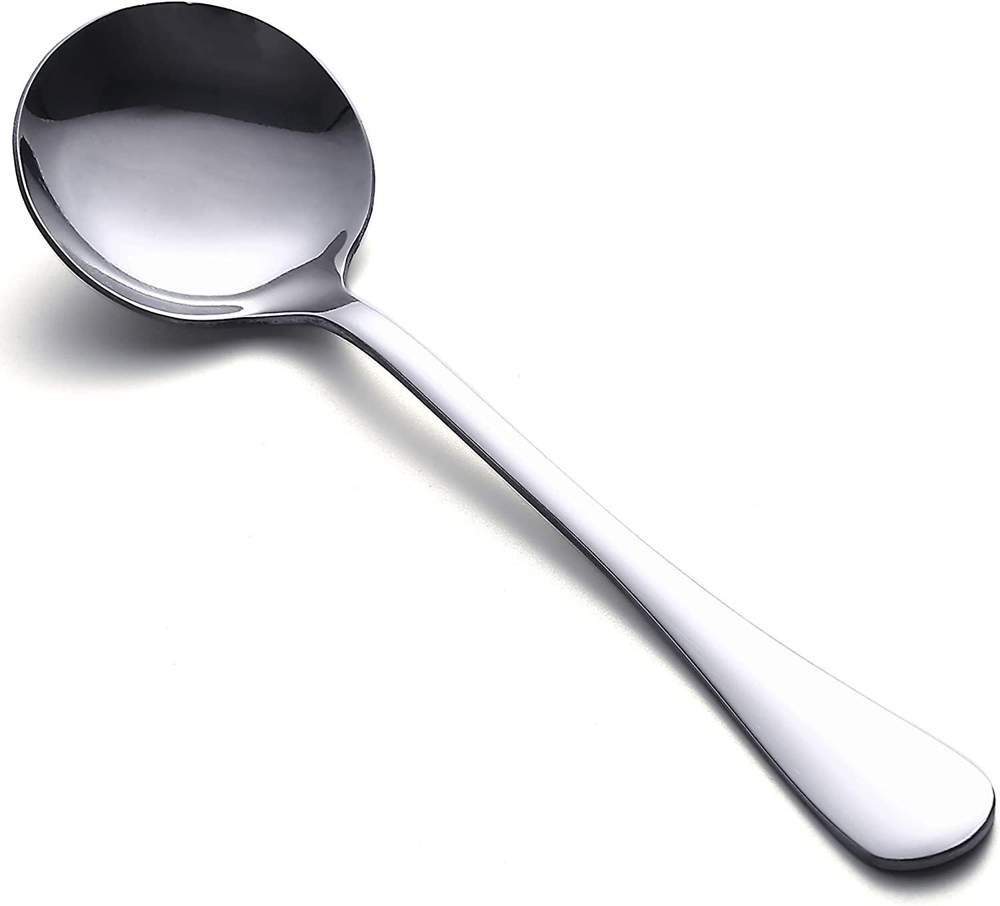

Spoons have been used since ancient times. The largest manufacturer is Cambridge Silversmiths Ltd, producing millions annually, mostly in stainless steel.

Forks were introduced in the 11th century and became popular in Europe during the Renaissance. Today, WMF Group leads in production.

Knives have been an essential tool for humans since prehistoric times. The most common material for modern knives is stainless steel.

Soup spoons have a round, deep bowl to hold more liquid, perfect for soups and broths. They're larger than teaspoons and designed to prevent spills.

Salad forks are typically smaller and shorter. Gorham Silver is a well-known company for producing these utensils.

Butter knives are made with a rounded tip. Reed and Barton is a famous company producing these in various materials.

Teaspoons are small and typically used for stirring tea or coffee. They are often made from stainless steel or silver-plated metals.

Dessert forks are smaller than standard forks, with Cambridge Silversmiths being a major manufacturer.